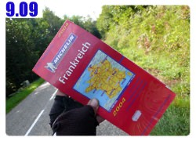
I didn’t take out the sleeping bag or the mattress pad the night before.
I just wrapped myself up in the sleeping bag and slept on the bench in front of the store for the night.
The next morning the guy delivering the paper woke me up. I didn’t realize I would sleep well like this too.
It started raining lightly when I was getting ready to leave in the morning.
This wasn’t a big problem since the rain wasn’t big, besides I have been rained on a lot lately so this little rain doesn’t bother me.
However, the bike was weird, it felt like it doesn’t want to move. I bent down to check it and found out the back tire was out of air.
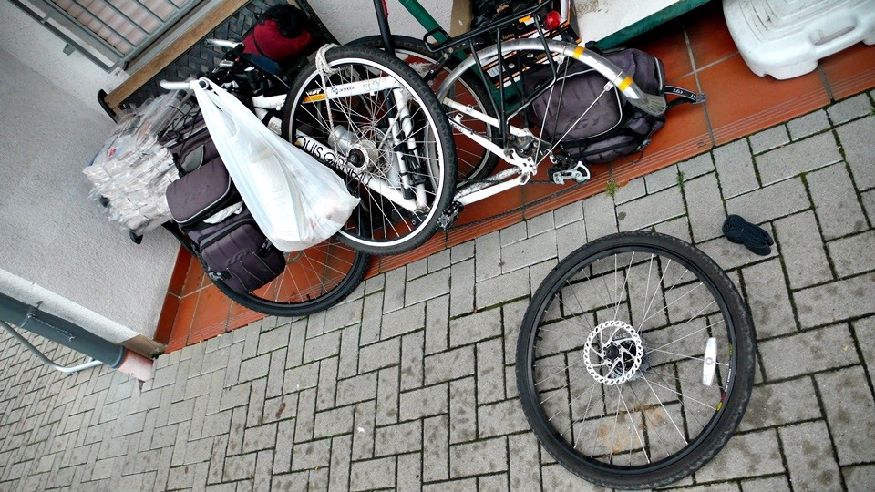
Even though I knew the back tire has problems loosing air, but I thought it was just low pressure.
But after I wake up now the whole tire has no air, it looks like someone has let out the air completely.
Is it possible something poked it? I was suspicious, but the probability isn’t high so I still took off the tire and check.
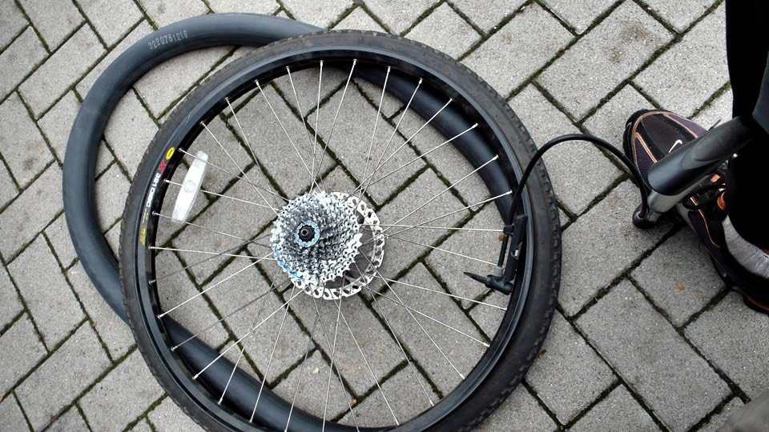
I had thought after I changed to the new tire,
the tire wouldn’t burst again on the way to Paris so I had not planned to open up my tools, but it is not avoidable.
After my inspection, I didn’t find any holes, and the outer tire doesn’t seem to have any damage either.
So I pumped the inner tube to see if I can find where the hole is, but I still cannot find any.
So I pumped the tire back up and put it back on the bike.
I felt like I had wasted all this time but how come a perfectly good tire will not have any air?
While I was inspecting the tire, I took out the multi-purpose tool. It looks like this after I have separated the whole thing.
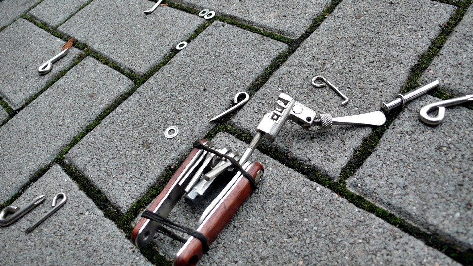
This trip gives me a big lesson, rather than taking lots of tools that I might be using,
I should have taken a good tool that I would use.
I shouldn’t take a multi-purpose tool that may not have much use to me,
because when I actually use it, it is hard to use and I would get angry.
After putting the tire back I tried to move the bike, but the bike still wouldn’t move. This time the chain got caught.
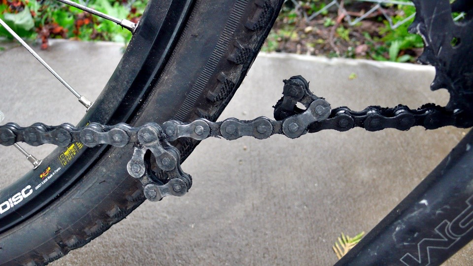
This is a brand new chain; the chain got locked just after a tire change.
I put on my working gloves and tried to get it back to normal.
I had thought if the chain is back to normal everything will be ok, but this is just the start.
Because the chain is caught, so a small section is now bent,
so when I ride the bike speed will change automatically every time the chain goes around one time regardless which speed I set the bike to.
It is hard to describe how it feels, but my conclusion is “how can I ride like this?”
So I got off the bike tried to fix the chain with some force, but the chain is too hard, and I don’t have enough strength.
So without any tools I couldn’t bend the chain back. The only thing I could do was to ride slowly toward Germany/France border.
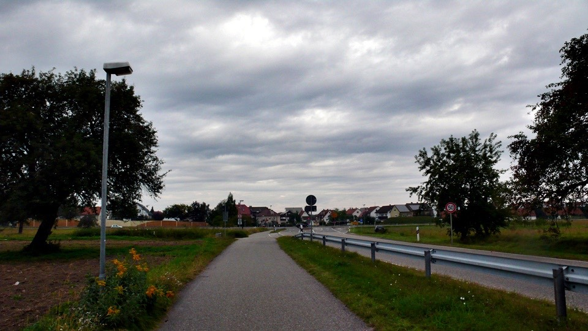
It just had rained lightly in the morning so the sky is dark; it has the feel that we don’t know when it will rain again.
Right now I am about 20km (12.4 miles) from the border.
The Germany/France border here is separated by a river.
The other side of the river is France, and of course where I am is Germany.
Looking at the map I noticed I needed to ride a lot more before getting to a big city, there will be a bridge I can go to cross the river.
The map does show lots of accessible roads next to the river, but none of them show a way to get across.
However, I wouldn’t know the actual situation without going there in person,
so I rode close to the river and I saw boats that can go across.
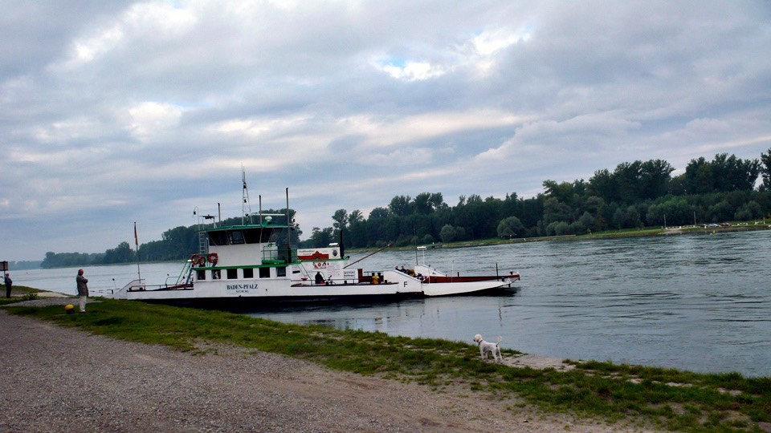
If I can easily cross the river on the boat then I do not have to ride extra,
and no need to go into a city or cross a bridge.
Next to the pier there is a post stating the price,
but I have no idea what it says not because it is in German but because it is written so complicated
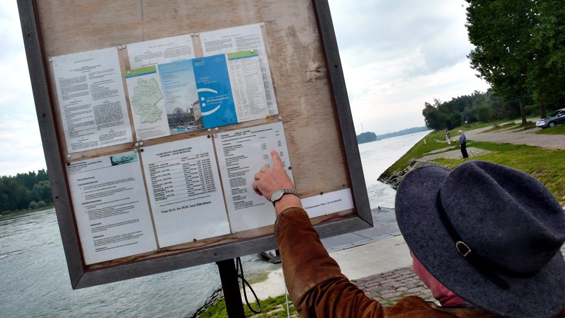
Right then there is also a grandpa taking his grandson on the boat so
I asked him how much it would be for the bike and myself the answer was $1.5 Euro ($2.25USD).
Good thing I have enough money on me, and today is Sunday so all the stores are closed.
Other than the fee to cross the river today, there is no other place I can spend money.
This is the only pier in 5km radius (3.1 miles) with the only boat.
Even though the posting stated pricing but there is no stated time when the boat will leave.
So I had the grandpa asking the crew that is cleaning the boat when will the boat leave?
The crew doesn’t have an exact answer either since the captain went to get some coffee.
Whenever the captain returns is when they will leave, and they do not know when the captain will return
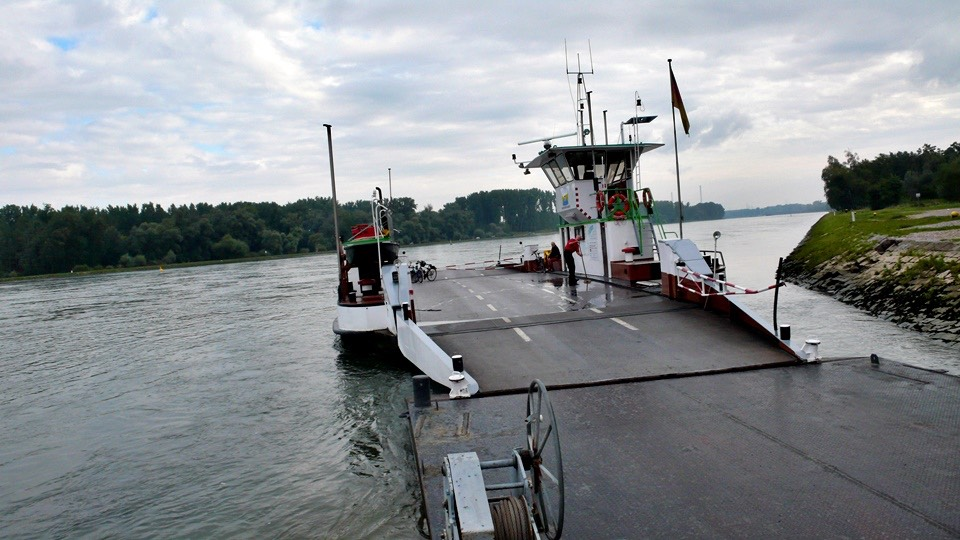
So I bought the ticket and waited on the boat, since it would save me at least an hour by taking the boat than crossing the bridge.

I got this little receipt after paying $1.5 Euro, however no information on it is correct,
they even have the date printed as September 17, 2008, and the price being 4.5 Euro.
There is a website for this boat too, for people who are interested they can take a look at what it says,
if there is pricing place study careful then you will know how complicated it is.
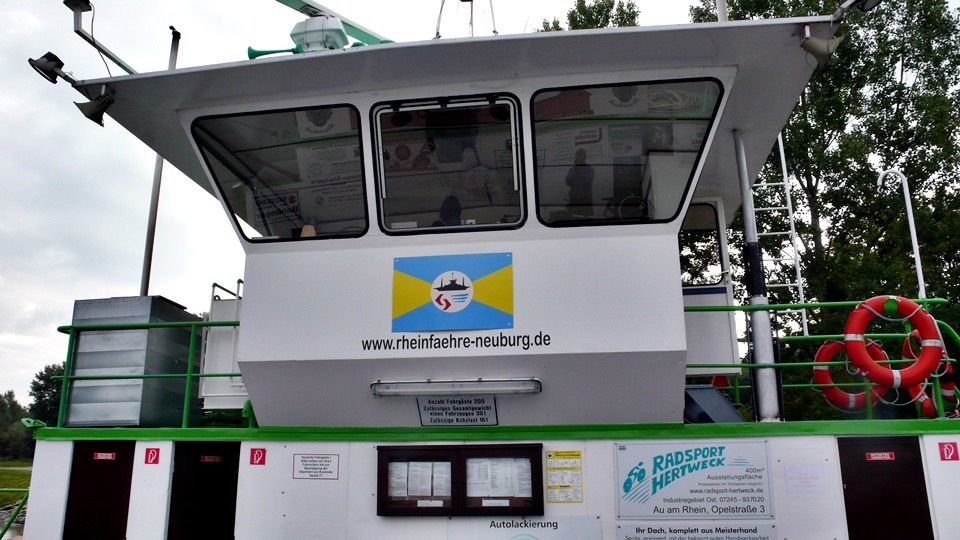
There are lots of people taking their bike across; there are 3 of them on the boat, but no car. Business like this is a bit lonely.
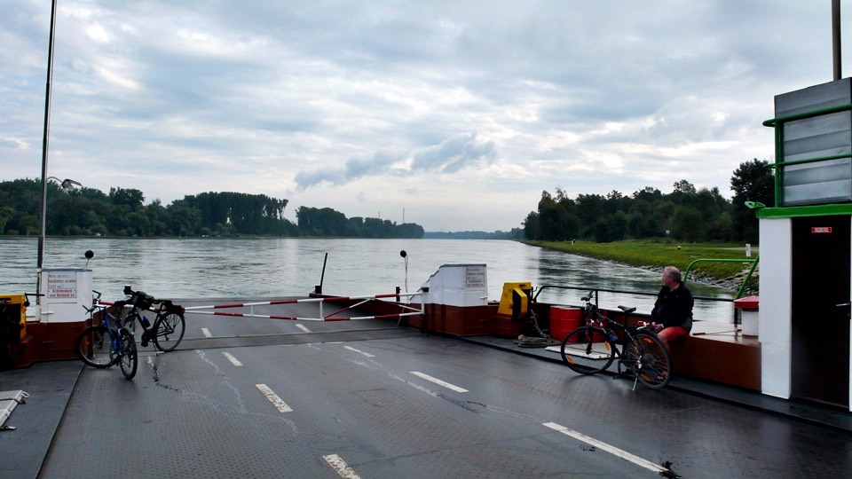
Talking of business, after paying I just realized the past few times it is free taking the boat,
but this time it cost money.
I guess if they don’t charge money, then there is no way to make a living.
However, I didn’t waste any time, I took out my dirty and oily working gloves and tries to bend back the chain.
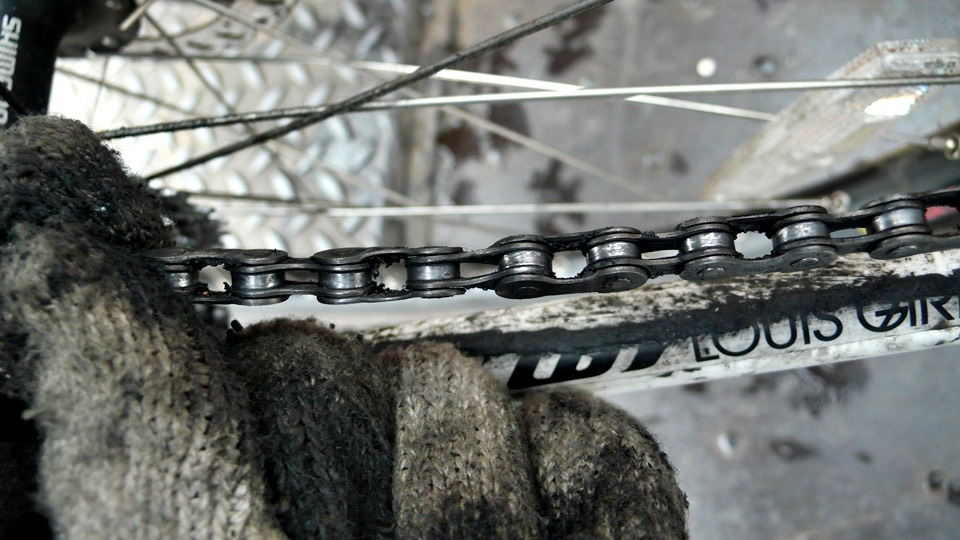
It is easy to see on the photo the middle of the chain is completely bent, regardless how hard I try it won’t bend back.
So the only way is like this morning, letting it get tangled again except opposite direction, and then with some hard pull,
the chain is partly back to normal.
I didn’t dare to use a lot of pressure just in case I may break the chain, then I wouldn’t be able to ride the rest of the way.
In the middle of fixing my bike, the captain returned from his coffee.
The boat left shore very smoothly, and I didn’t even feel anything. By the time I felt it, the boat had already left the shore.
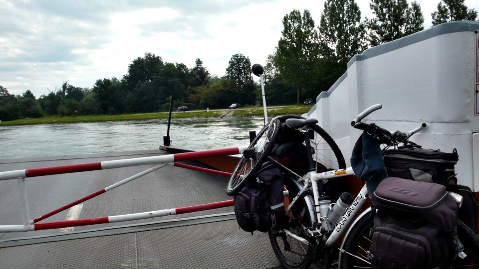
Quickly I removed my dirty gloves and took some pictures with the camera.
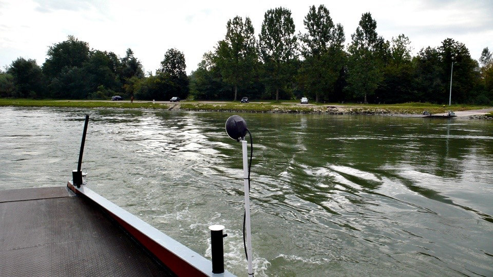
It took about 2 minutes to get to the other side, a little money I will just pretend it is for captain’s coffee.
On the other side of the river is France. Right, it is this easy, already entered France.
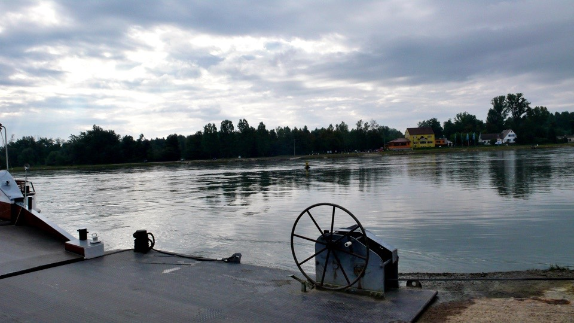
There is no customs or immigration officer here to check luggage or passport, easily I went from Germany to France,
and there is no feel of getting into another country.
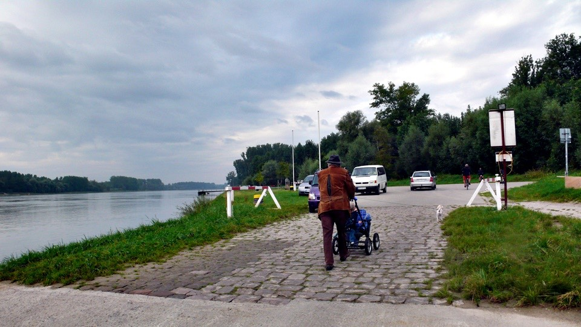
Thanks to the grandpa looking at the price for me.
On Germany’s side I said thank you to him in German, and then in France I said thank you again in French.
This is another little bicycle sign, but smaller and different, there is a little “F” in the end of the location name.
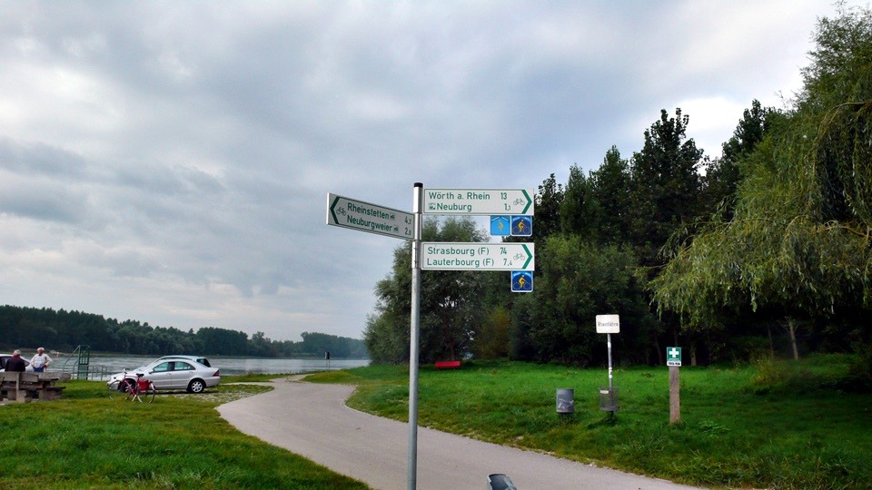
Everyone, this is France. Suddenly a totally different picture, everywhere it is farm fields.
So when I was eating the apple I picked from the road a white horse and a black goat came up to me.
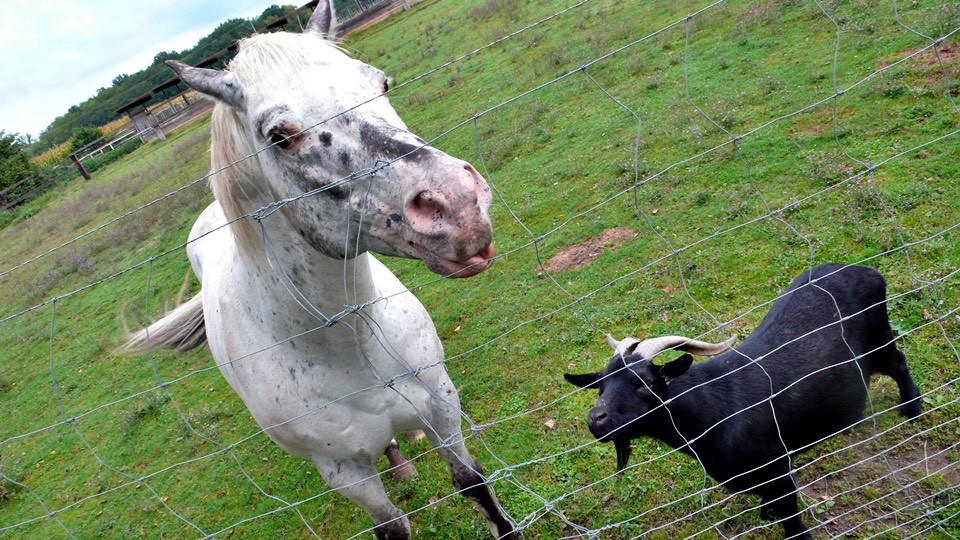
This is like a test, which animal would you give the apple to?
The first impression when entering France is there are lots of bicycle riders!
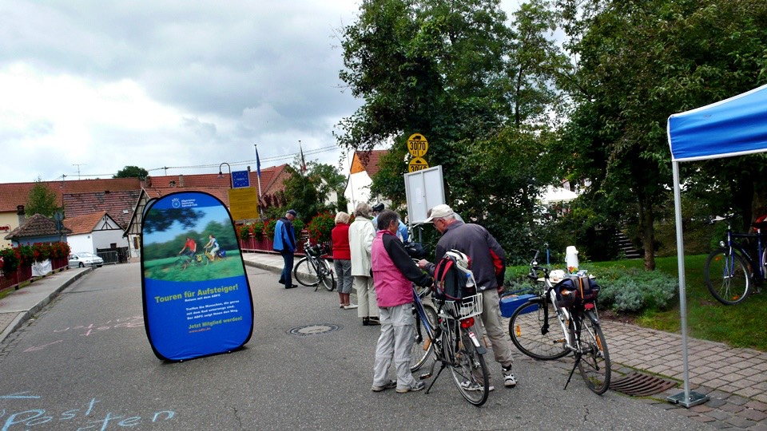
Is this the France I know? Two years ago when I biked around France,
there are lots of roads do not allow bicycles on there that drove me nuts.
Is it possible after 2 years France now follow Germany and constructed lots of bicycle path?
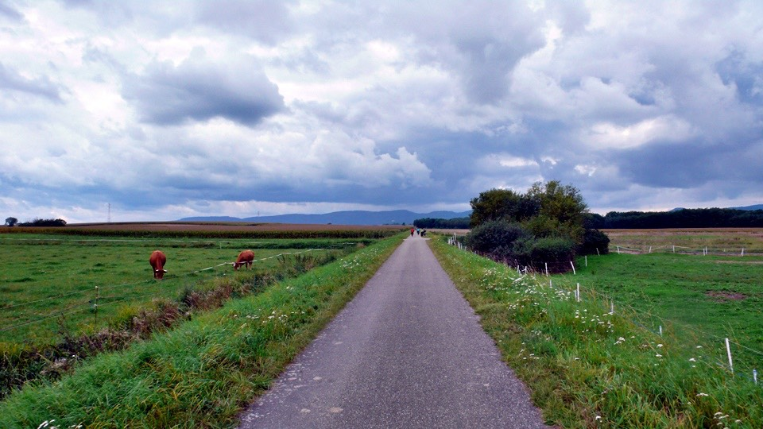
Riding there is very nice, nice scenery, cool weather, flat road, and no cars competing with me.
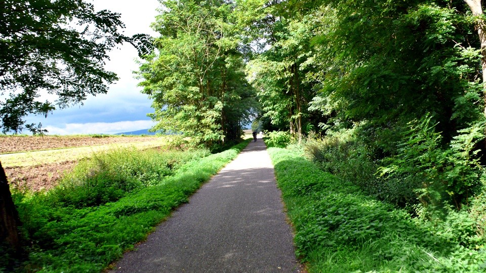
Following the bike path toward the city, there are lots of people riding bicycles.
Whenever there is a table or grassy area, I would see bikers picnic on the side.
In my heart I was hoping some family that is picnicking would ask me to join them.
Wishing is wishing; something like this didn’t happen so I ate my toast for both breakfast and lunch.
There is a little problem after entering the city.
I had thought the map Peter gave me was a map of Europe,
but then I realized it was just a map of Germany with some bordering roads in France.
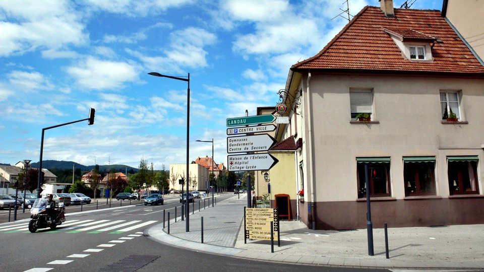
It would be impossible riding to Paris just with this map; since the road to Paris is very complicated.
For just 4 days trip I don’t want to purchase a new map,
so I used city maps posted trying to figure out which ways I should take.
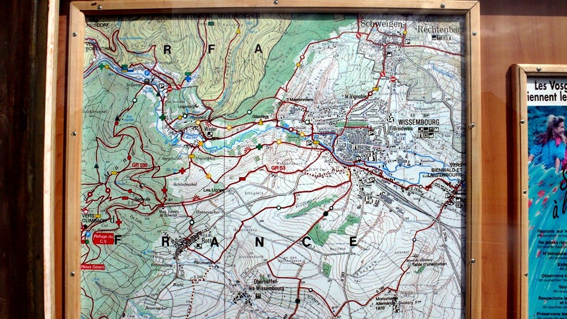
here first, see if I can connect to a big road and go toward west.
Germany’s borders are rivers not mountains, so there is no need to climb mountains.
However, once entering France there are lots of uneven mountains, even if they are not steep, it will still be difficult.
However, the good news is that once entering France it will be good weather.
I have been under lots of cloudy sky for days, so let’s have bright blue sky for a while.
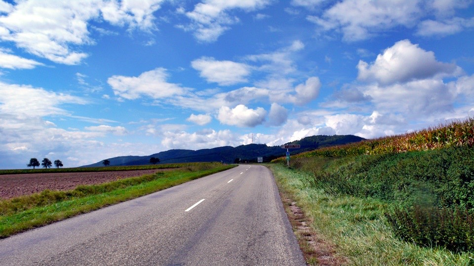
Even though just a small map here, but this is better than nothing. I better study how I can get out of.
Even though those roads aren’t steep, but it is very tiring.
There are lots of people riding bikes here, and there are even people riding in uniforms in a group
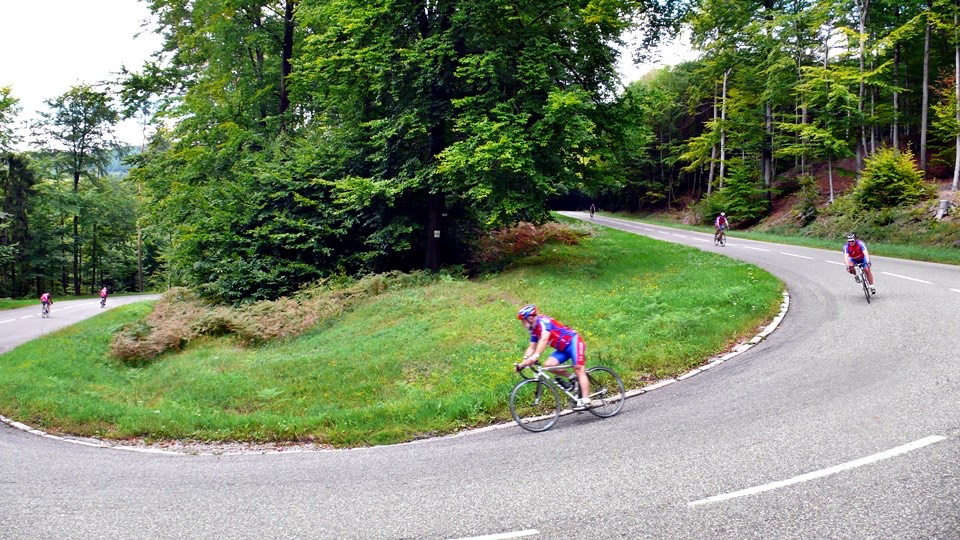
Climbing so tiring, how high is it exactly? I am embarrassed to say, it is just 400meters above sea level.
Is it possible because I have only been eating toast lately so I am tired, not like before when I ate good meals?
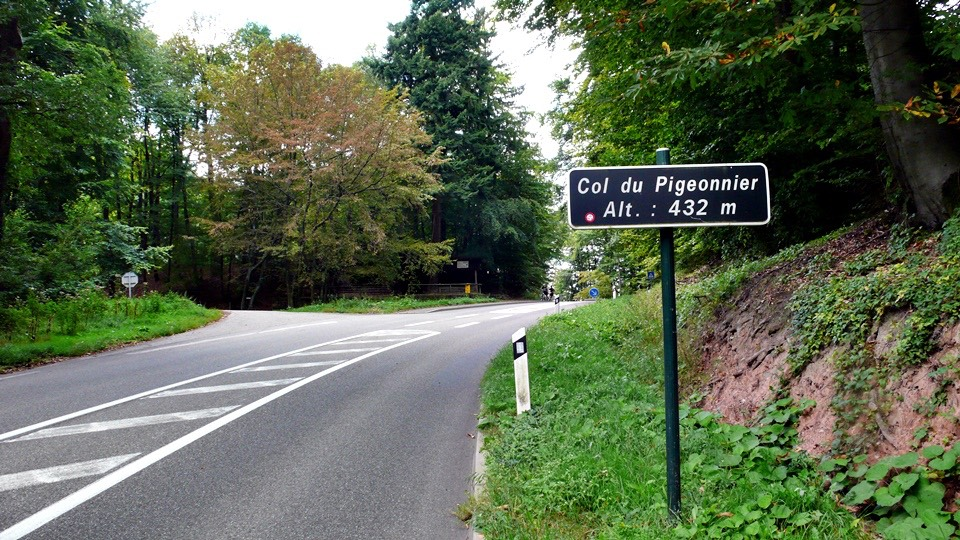
On the top of this hill, there are 2 cars parked.
One of the guys is standing next to the road, and when I passed by they waved for me to stop.
They spoke with fluent German, and they even drove past me earlier.
Seeing me riding the bike with lots of luggage, and the one that attracted their attention are the 2 spare tires.
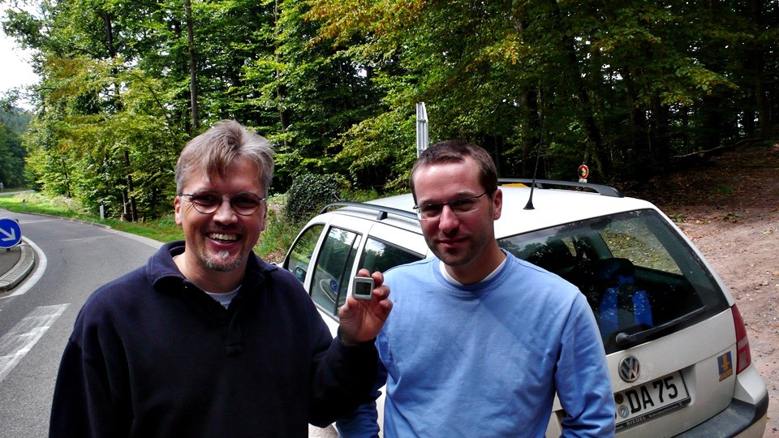
What they are holding is my meter counter, the total right now is 13688km (8500 miles), looking at this number,
the people from the car screamed “you crazy”. It turned out to be 2 families; the one holding the camera is a little girl.
European families are interesting; doesn’t the dad usually hold the camera in occasions like this?
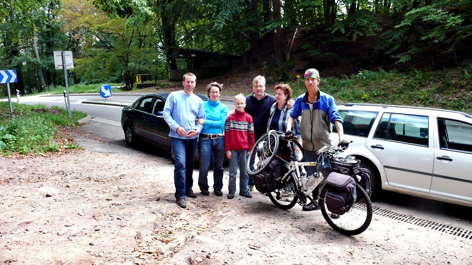
The German dad told the little girl in the car to take a picture for everyone and then handed her the camera,
the little girl just followed what her dad said.
After taking the picture they asked me where I am headed?
We ended up having the same destination; they are going to Paris as well.
So I took the chance asking if the dad has a map of France, can I see it?
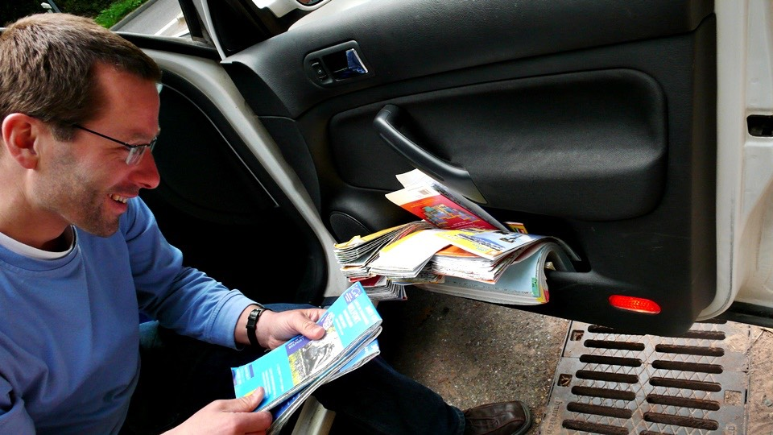
The dad has lots of maps in the car; the storage place on the door is packed.
He fumbled around a bit and asked me which one is better.
Then he took one that says “1cm=10km” whole map of France.
If I want to ride farther than Paris I can still continue.
Taking this time I opened up the map and took a picture.
First I found where I am at first, and then figured out what road I can take to get to Paris.
Taking a picture and took some notes down
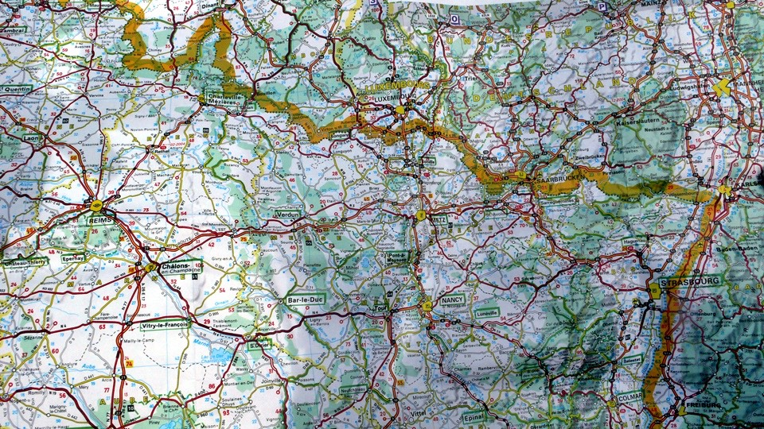
Writing just few words, the dad said I could have this one, no need to write so much.
He also wished me have a safe trip to Paris, and they will reach Paris tonight.
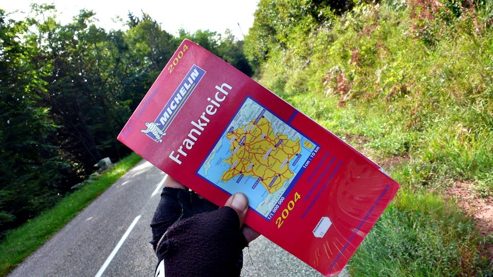
So in this way I got a map of France, it is like playing a RPG game.
I got stopped by stranger, chat a bit, and then got a map as a gift.
So the confusing roads now became clear, riding without a map is like missing something. I feel better now with a map.
From the map there seems to be 2 roads to Paris, N3 and N4.
In France, the highways all start with “A”, the rest of the roads start with “N”, “D”, “C”, and “L”.
In theory, other than “A”, the rest allow bicycles.
However in reality, a lot of roads are for cars only,
and the map do not show which roads are for cars only unless you go there yourself.
So now I need to figure out what roads to take, the path I had planned are being changed now.
So trying to figure out a path to take, it is like what happened 2 years ago when I traveled around France.
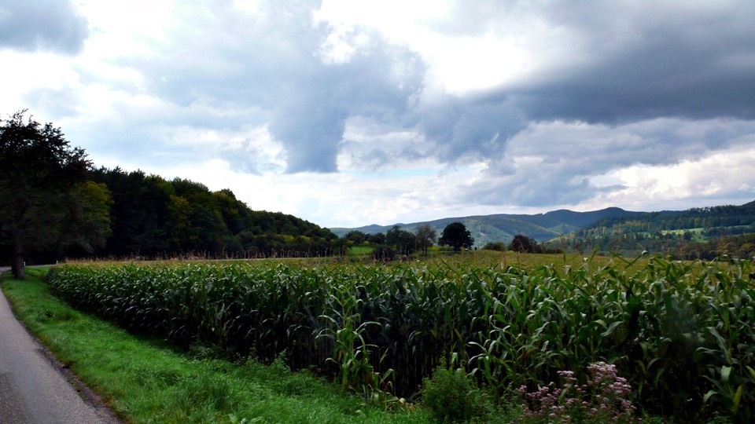
Even though the mountain isn’t so high, but the view is very open.
Looking at the farm fields, there are lots of corns in the field.
Some small town in the mountains, there is a mini gas station here.
Seeing the gas station is this small, then I know there isn’t lots of business here.
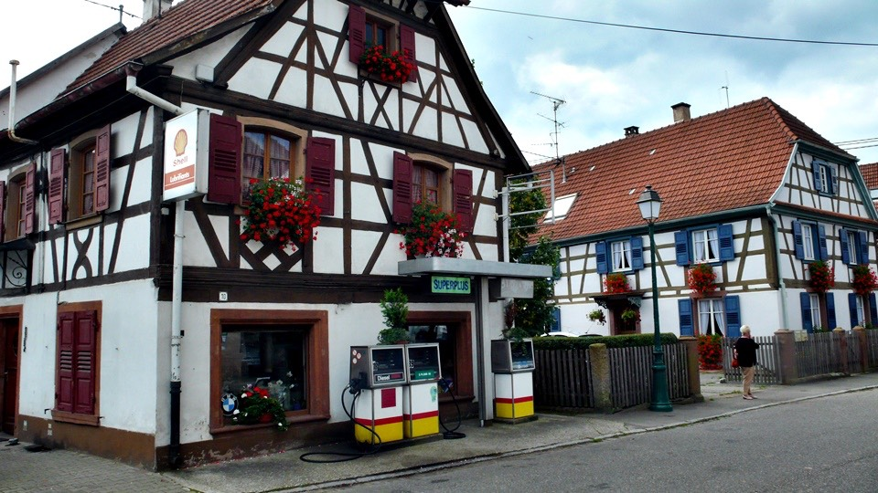
Most of the buildings here are family housing, definitely a church, plus some bars, bakery, and then a post office.

After paying the ferry, the cash on me is now even less.
I wanted to exchange some USD on me for some Euros, just in case when I need money I have nothing on me.
But when this thought occurred to me, I realized today is Sunday, the day all the stores are close.
So I have to last one more day, then I will see if there is any bank open tomorrow for me to exchange some money.
Mom, I have been eating, don’t worry, even if just eating bread, but I still fill myself, and not being hungry.

The tiny faucet, if I just press on it, lots of water will flow out.
This is probably spring water. Taking this chance to wash my headband, and drink a stomach full of water,
filling the water bottle then continue on my way.
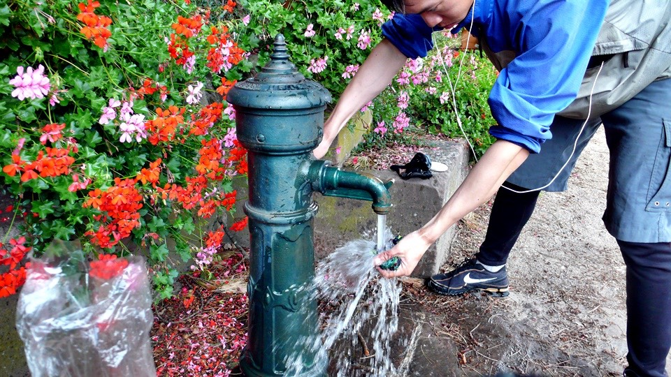
My stomach filled with toast and spring water and I feel filled, so I just tell myself I have ate a big meal.
Then I will eat a big meal once I get to Paris to thank myself.
Another town in the mountain. Even though I have a map in my hand, but those towns are not seen on the map.
So the scale on the map isn’t so great. So when I use this map to ride I need to be prepared I might get lost.
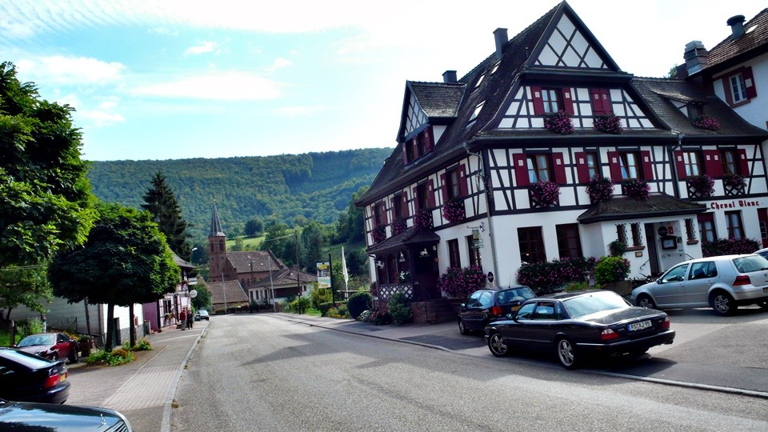
When I get hungry I have some candies I can eat, and a packet of walnuts from yesterday.
The walnut shell is extremely hard; it is impossible to crack it by my hands.
So I put it on the ground and step on it.
I have to be careful with the pressure I use,
just in case if I smash the whole thing then I will have to eat walnut mixed with gravel and dust.
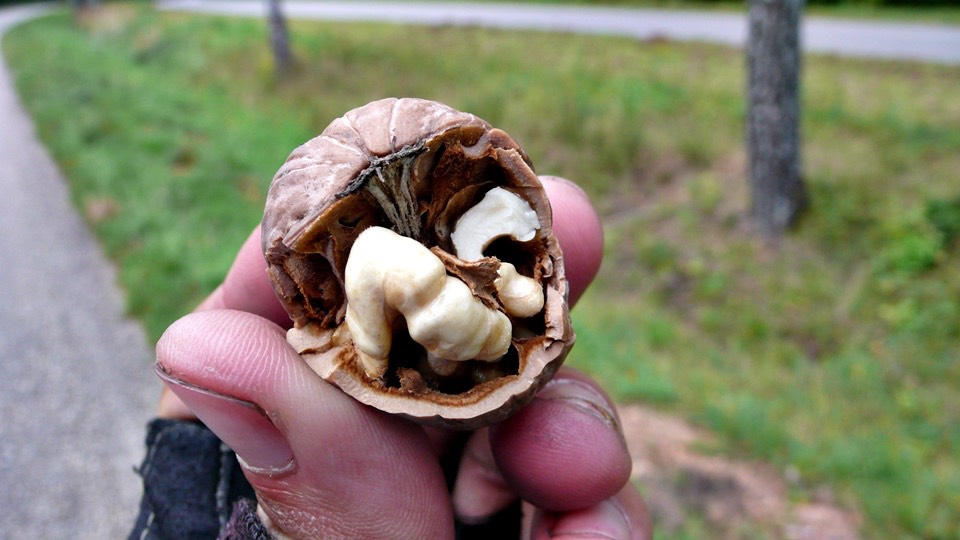
The walnut tastes pretty good, it has a bitter taste when first eating it.
But after some chewing there is a strong flavor.
Even though this cannot fill stomach, but it is a change of flavor.
Keep eating candy; I felt my mouth is about to become numb.
The very very tiny town in the mountains, but there is a ridiculous large castle here; it is so grand I can’t keep my mouth closed.
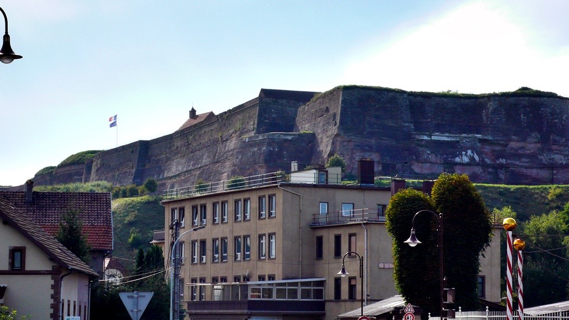
If I didn’t have my map, then usually in a place like this I would try to find the tourist center.
But since I have my map, I won’t go bother them.
When I rode the bike today, the back tire is also loosing air all the way to the point where it looks like it is nearly out of air.
In one day, I have pumped air into the tire 3 times in order to ride the rest of the way.
So I guess there must be some hole in the back tire, but the hole is so small so I have not found it yet.
But it is very tiring riding and pumping the tire all the time. In addition, riding a bike without air in it feels very heavy.
I considered changing the inner tube for the rear tire, but since I can still ride for few hours every time I pump the rear tire,
then I better not waste my time.
Time would be better spent in riding the bike.
Guess why I would be on the grass?
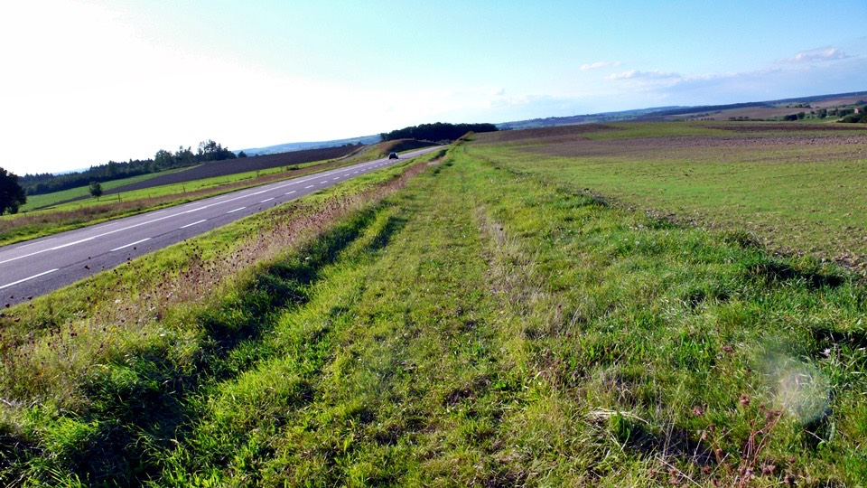
This is because the road next to me is “D” road, it became for cars only.
So now I need to find bike path again. What I had done in Germany isn’t practical here.
This is because the bike path here isn’t planned well, so sometimes I would have nowhere to ride.
But I have no choices right now so I ended up riding on cars only road again,
and trying to find another place to turn as soon as there is an intersection coming up down the road.
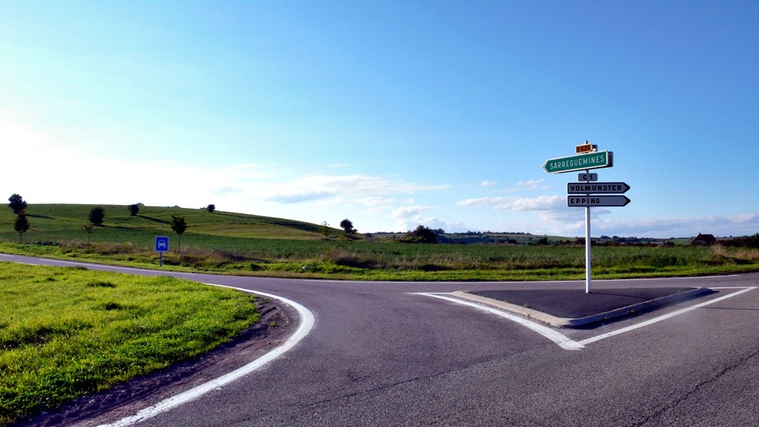
Even though I did get out of the cars only road,
but after studying the map a bit I couldn’t find what path I can take instead of this one.
So under the circumstance, I ended up on the cars only road again.
The little blue sign with car on it is getting annoying; they sometimes even have a sign that says no bike allowed.
Then there are double signs against me riding on the cars only road.
Riding about 10km on the cars only road I had thought I might get stopped by cops.
But luckily, I didn’t and I was able to ride to the next time.
Then I need to take N62, but this is cars only road again, then where should I ride?
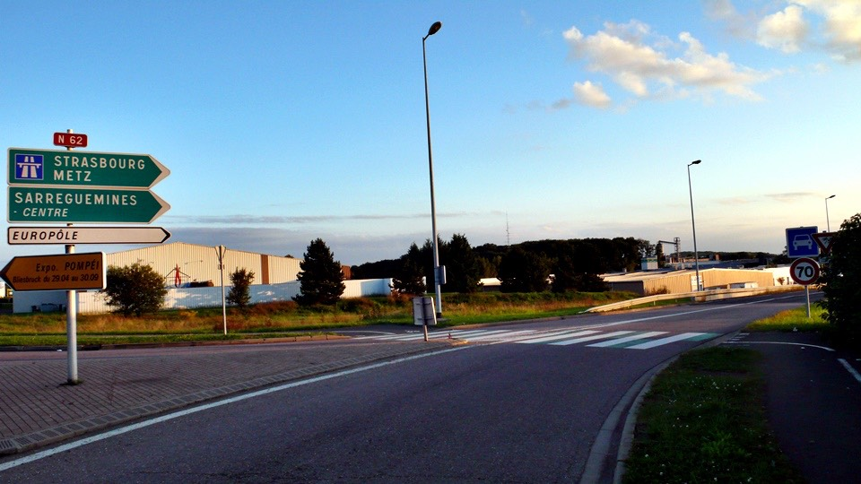
This is the path I had planned to take when I got the map, but now it is useless.
So I am flipping through the map trying to figure out which path to take to get to Paris,
but rather, I am trying to figure out how to ride out of this town.
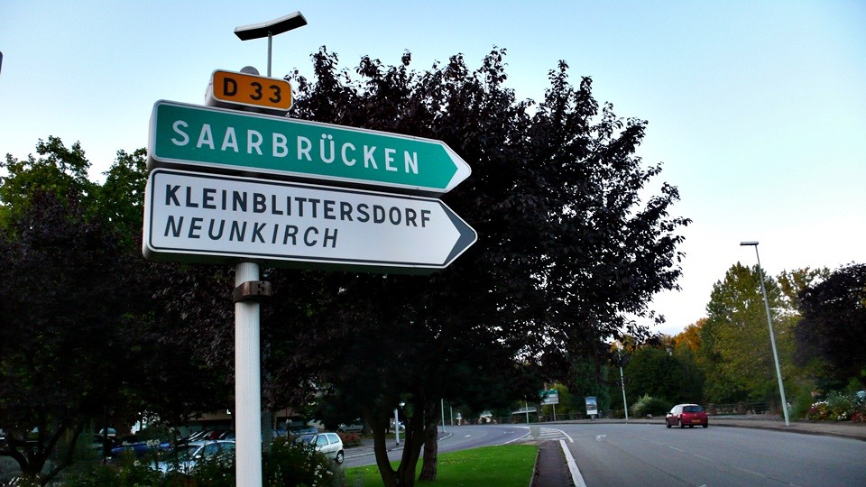
After seeing this street sign, I feel it is somewhat familiar, “Saarbrucken”.
The name of this town, sounds like the place where Peter’s friend lives.
Even though this particular path allows bike, but I better not go bother someone else, besides I don’t know the exact address.
So I will just figure out how to survive for the next few days.
Since I can’t get out of this town before sun down, but I better enter this town.
The first time I need to do is to find a detailed map of this town that will be the local tourist center.
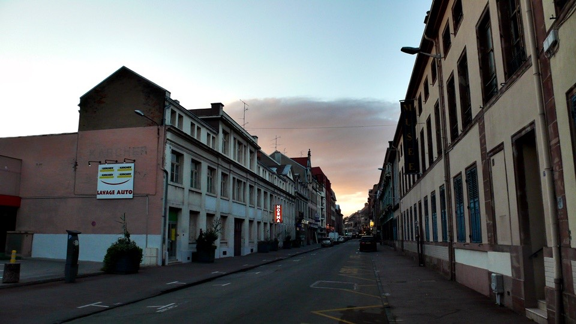
I did find it, but it is already closed. They are so cruel, there is a traveler needing your help right now.
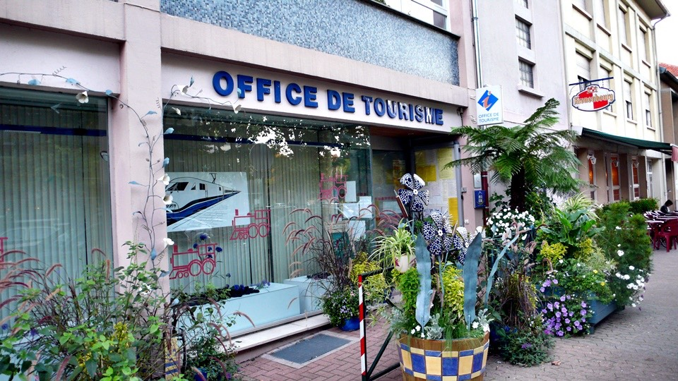
Good thing right outside there is a map of this town posted.
After studying a bit I took a picture of it on the safe side.
So now I have found a way to get out of this town, I just hope I can follow it to let me ride out of town.
The sky is starting to get dark, and since I am planning to get to Paris in 3 days,
I have to ride about 150km(93.15miles) each day.
Of course the more I can ride the better, if I didn’t ride that much each day, then it will get harder later.
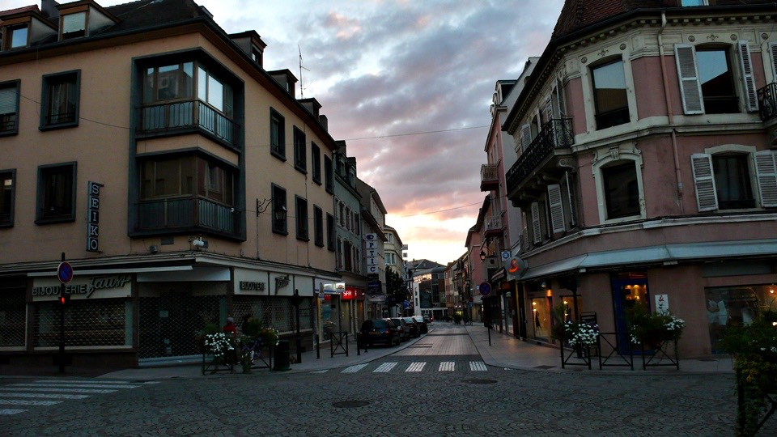
The people crossing by during sunset. Looking in through the window of a popular restaurant, I noticed it is time for dinner.
If this is a resting travel, then I would stay in this town, find a hotel to stay in,
take a hot shower, and then pick a nice restaurant to have my dinner.
However, none of this would happen, so the best thing is continuing riding toward my destination.
If I ride harder now, then I can have a good rest later.
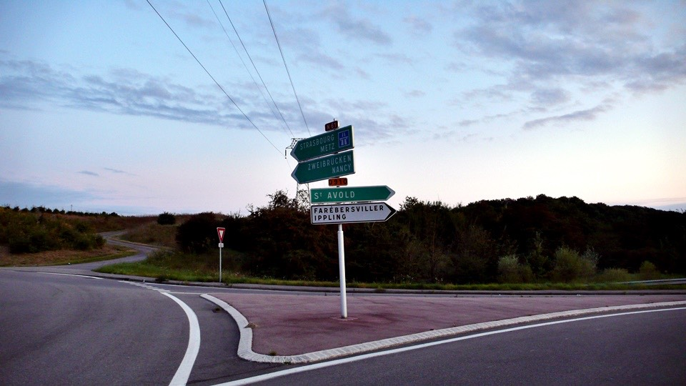
Thanks to the local map from the local tourist center so now I found D910 road.
This is not a cars only road, but bikes allowed as well.
The sky will turn dark in 30 minutes, so I better ride as much as I can now.
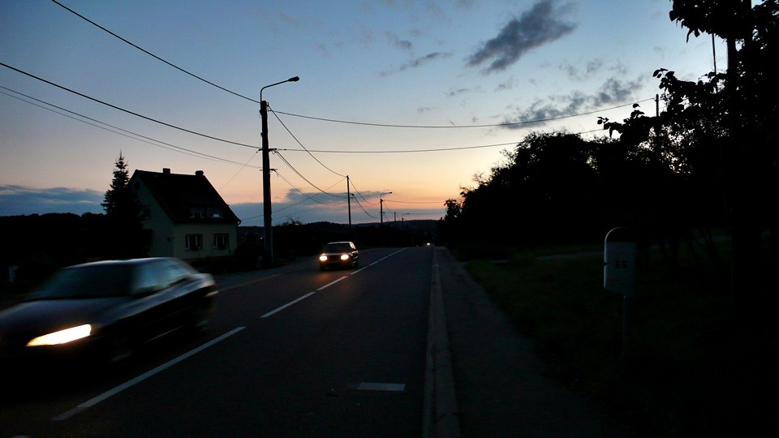
I had thought about riding in the dark with my bike lights on.
Even though the night is cold, but there should be a way to ride right?
Church, the door is locked as well.
Right now my water bottle is empty so I circled the church once trying to find a water faucet, but no luck.
After entering France, 2 things are getting hard to find, water faucet and electric outlets.
Those two things happen to be what I need the most.
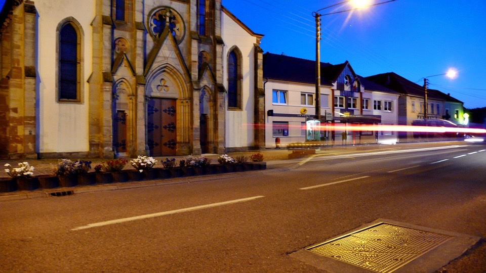
Riding in the night seems easy, but it will be very difficult.
This is because in the countryside there are no lights to guide me except the cars that are passing by, so it will be completely dark.
The tiny headlight on the bike is not bright enough to ensure safety.
So just riding a little in the night I already remembered what
happened 2 years ago when I was in France where I fell of the bike during the night.
During that night, with my bloody hands I sat in a dark bus stop.
Because I had fell off the bike, I had to fix the bike tire that burst from my fall.
Then I had to endure the pain and continue to ride and slept in the bitter cold abandoned gas station.
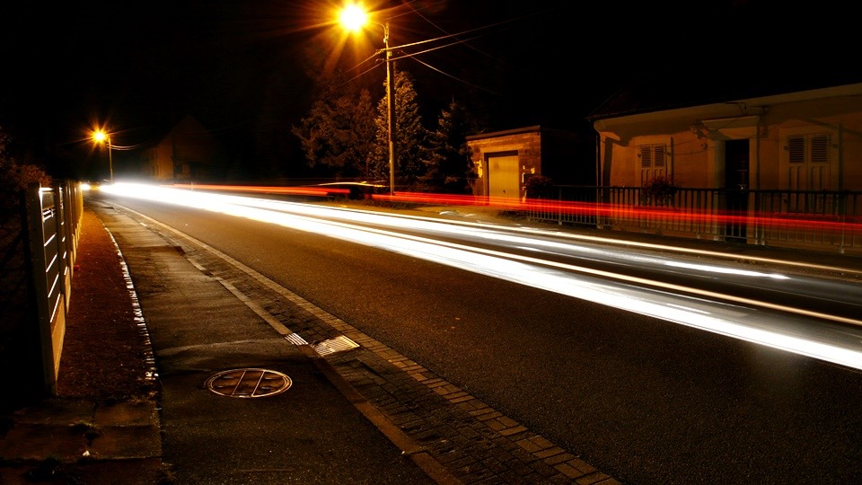
Right after all that thought, the sky turned dark.
The passing cars wouldn’t slow down just because it is nighttime.
Even thought the bike has a red flashing light on, but it isn’t bright enough, the driver won’t see it unless they get close to me.
The result of trying to avoid those cars will scare both the driver and myself, followed by honking at me from the drivers.
So the thought of riding more during the night is not a good idea, so I better find a place to rest.
Rest well tonight then I can leave early tomorrow.
I am not planning to writing travel journal during the day time, so I have lots of time to ride the bike,
I would be surprised if I can’t ride at least 150km each day.
After giving up riding in the nighttime I start searching for a place to sleep, the locked church door, the closed city hall,
I didn’t find a place I liked after looking at a few places.
I wouldn’t be able to sleep in a bus stop either, this is because in France they use clear plastic paneling for the bus stop,
so there is no way to hide in there.
The bench is also short and small; it looks like it will be very hard to sleep on it.
I am very thirsty right now.
I finally found a faucet outside a house so I went to see if there is water, but 9 out of 10 the faucet is dry.
I finally found this water source. The night is cold enough already,
and water is cold enough to be frozen. So even if I filled my water bottle I did not dare to drink lots of it.
I am afraid if I drink too much cold water my stomach will not be able to take it.
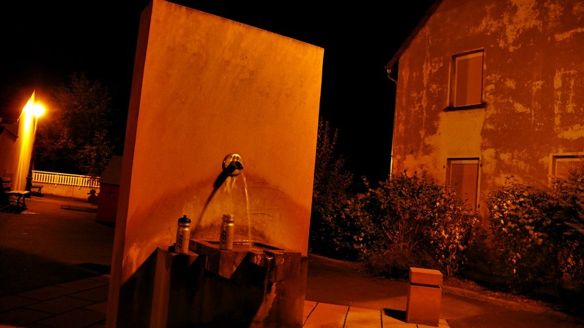
Looking at this water source, other than it gives me water; it also let me have a rest place.
I will spend the night in the mini park behind it.
It is this tiny log cabin, now you can see how small it is next to the bike.
This log cabin is for kids; tonight I plan to sleep inside.
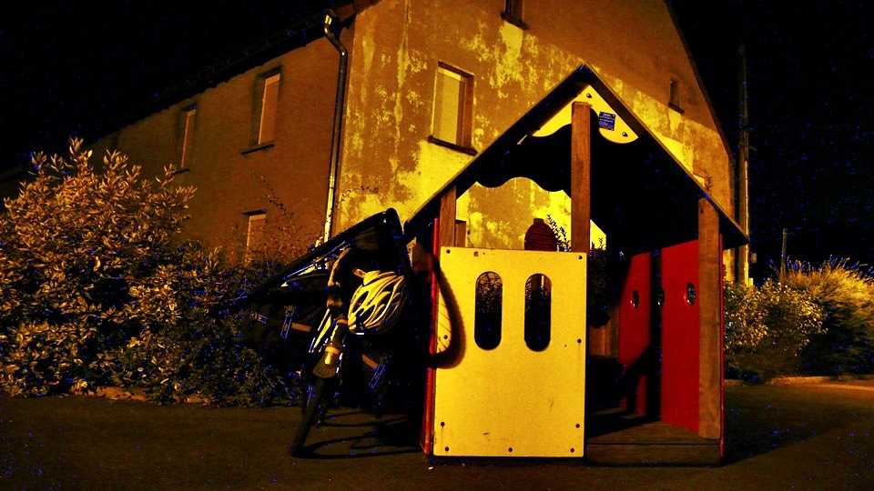
After some estimation, there is no need to get out the mattress pad or the tent since there is no place to put it.
I will just wrap myself inside the sleeping bag, and lean against the wood board.
It is very difficult to sleep, during the night my behind and my back were hurting,
and my feet were numb due to low blood circulation, so I kept changing my sleeping positions.
The night got colder and colder to the point I couldn’t believe it is September.
I didn’t want to scare myself so I didn’t go look on the thermometer.
I just took a thick clothing and wrap up my head.
After separating from the cold air it got easier to sleep.
It was an ok place to sleep other than the fact I had to change positions every 20 minutes.
The reason I picked here is because the watch showed it will rain, so I tried to pick a place that does have a roof covering.
When I was little, I find playing in log cabins like this is interesting.
However, when I got older it wasn’t so fun sleeping in here, it is cold, cold, and cold to the bones